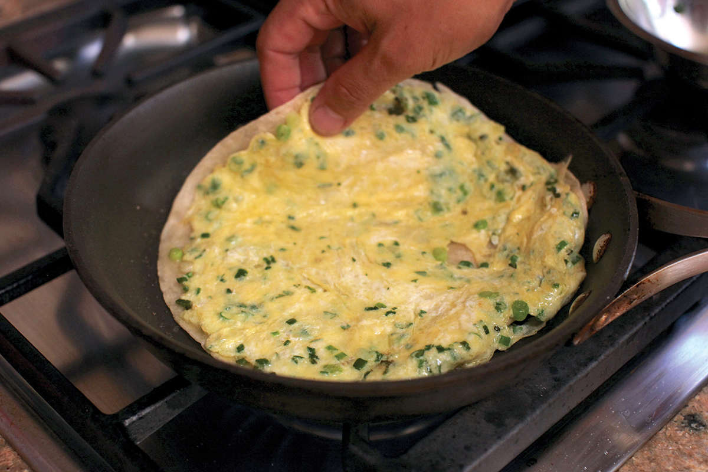
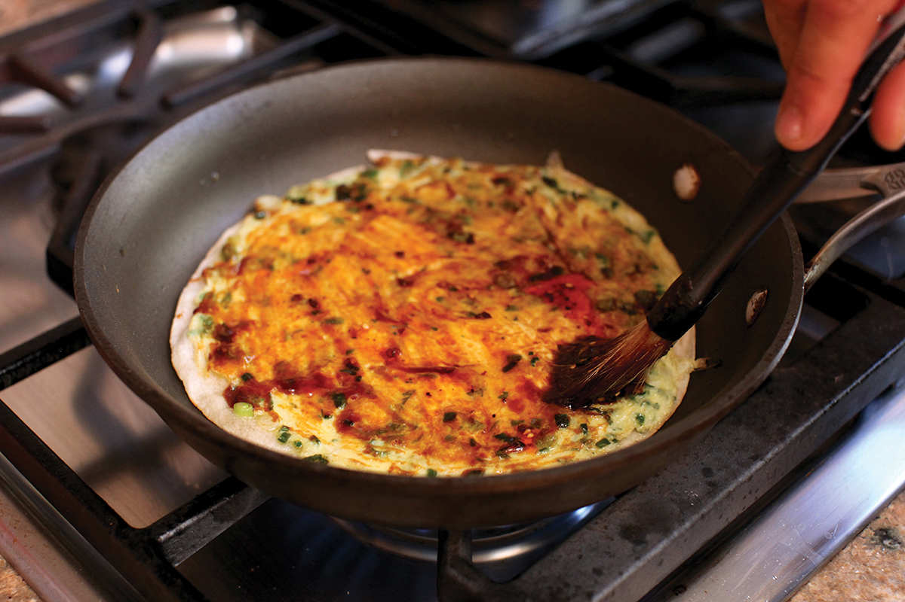
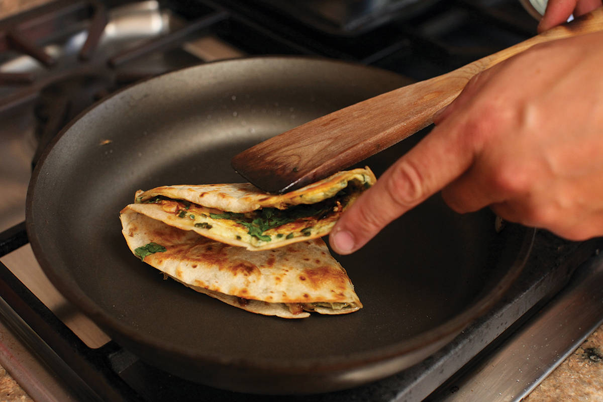
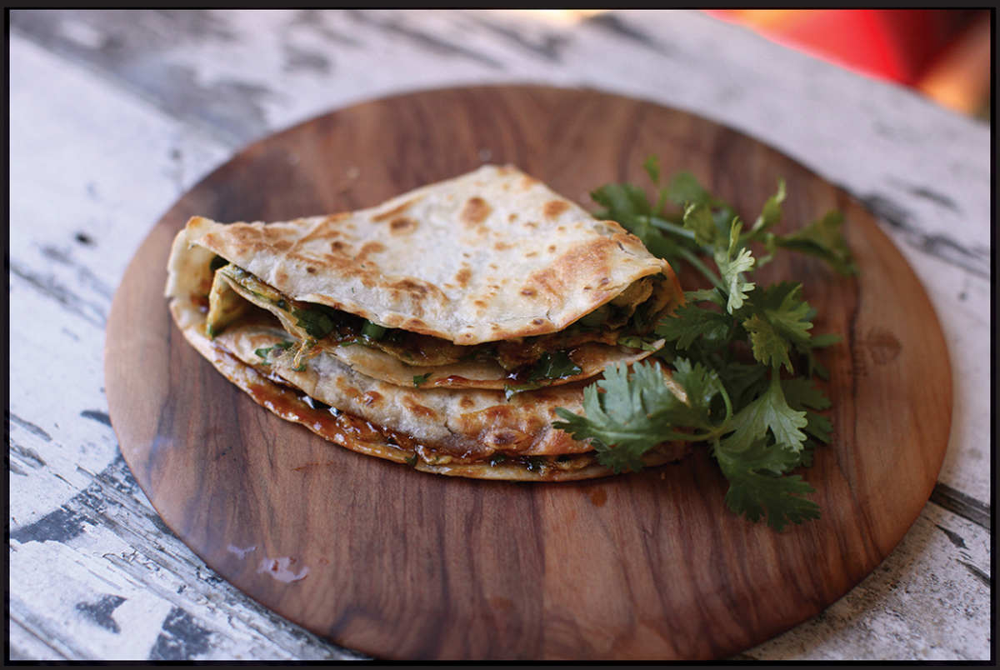

EASY TORTILLA “JIAN BING”
|
Yield Serves 1 Active Time 10 minutes Total Time 10 minutes |
Feel free to add any kind of filling to these folded sandwiches, including strips of fried chicken, bacon, ham, extra scrambled eggs, greens, or stir-fried corn. |
INGREDIENTS
1 tablespoon (15 ml) peanut, rice bran, or other neutral oil
One 8- to 10-inch flour tortilla
1 large egg
1 scallion, thinly sliced
Small handful of fresh cilantro leaves and fine stems, roughly chopped
Small sprinkle white or black sesame seeds
Pinch of kosher salt
2 teaspoons (10 ml) hoisin sauce
2 teaspoons (10 ml) homemade (here) or store-bought chile oil
July 19, 2014, Beijing, China:
This morning we had jian bing, the Chinese-style egg-filled crepes found in every major metropolitan city in the country, for breakfast. It’s a dish so damn delicious that I can’t fathom why it hasn’t become a staple food in Chinatowns all across the U.S.* It’s essentially a batter-based crepe cooked with an egg smeared into one side, along with cilantro and scallions, that then gets brushed with a few sauces (hoisin or a similar bean sauce and a ground chile oil), then folded up, often with a baocui inside. The baocui is a puffed, crisply fried cracker that’s a specialty of Beijing.
Essentially what you’ve got is a bit of crisp carb wrapped in soft carb action. We ordered ours with a piece of battered fried chicken wrapped up in there with the cracker. As the whole thing steams, the inner cracker softens a bit, but you still get an awesome mix of texture and flavors.
In the intervening years since I wrote that travel diary entry, I’ve seen jian bing vendors start popping up in the United States on both coasts, so at least a few people had the same idea.
At home, I’ve taken to making a quick, cheaty version of the dish using store-bought flour tortillas.
To make it, I start by panfrying a flour tortilla in the bottom of my wok. Meanwhile, I whisk together an egg with some cilantro and scallions, which I then pour over the tortilla and spread around with the edge of a spatula until the tortilla is coated in a layer of the egg mixture. As soon as the first side is crisp, I flip the whole thing over, egg side down, to fry.
Finally, I flip it again and brush the egg with some hoisin sauce and chile oil before folding it up into a neat triangle. More adventurous cooks can try folding the tortilla with the egg layer on the outside for a more authentic take. It’s not quite as glorious as the crepe-based original, but it’s got texture, flavor, and is a fantastic (and fantastically quick) breakfast or snack in its own right.



DIRECTIONS
1 Heat the oil in a flat-bottomed wok or a carbon steel, cast iron, or nonstick skillet over medium heat until shimmering. Add the tortilla.
2 As the tortilla cooks, whisk together the egg, scallion, cilantro, sesame seeds, and salt in a small bowl. Pour the mixture on top of the tortilla and spread it around into a thin, even layer using a rubber spatula or the end of a metal spatula. Continue cooking until the tortilla is golden brown and crisp on the first side, about 3 minutes total. Flip the whole thing over so that the egg is facing down. Reduce the heat to medium-low, and cook until the egg is set, about 30 seconds. Flip the tortilla again so the egg side is up.
3 Brush the egg with hoisin sauce and chile oil. Fold the whole thing in half to form a semicircle, then in half again, forming a quarter-circle. Slide it out of the pan, wrap with a napkin, and eat it with your hands.

*Or perhaps it has and I just don’t know where to look.